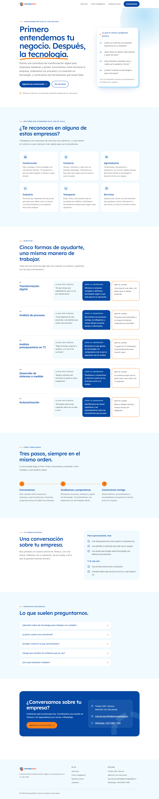

AConsultor senior cercano
Transmite cercanía y experiencia: se lee como la primera reunión, con las preguntas antes que la tecnología.
Le habla mejor al dueño o gerente de una pyme que nunca contrató una consultoría y quiere que primero lo escuchen.
- Tuteo
- Colores del logo
- Títulos en Lexend
- Sin placeholders